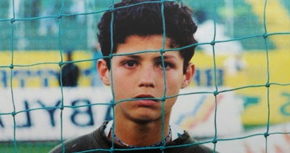
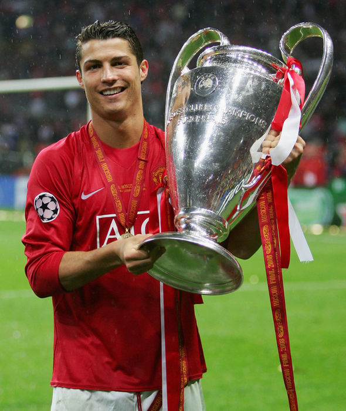
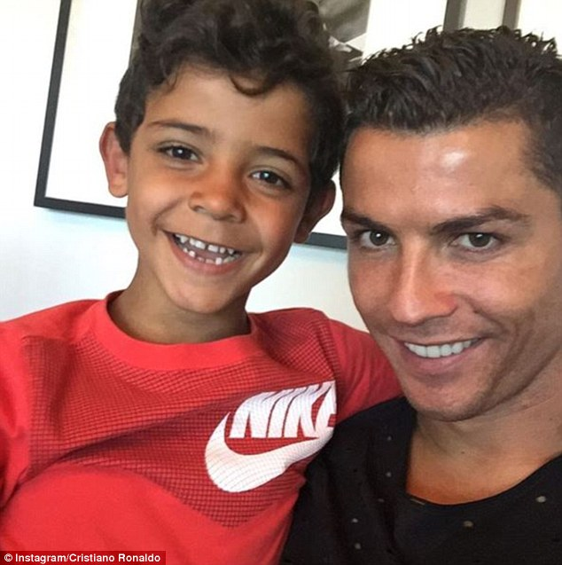

 Cristiano Ronaldo dos Santos Aveiro was born on February 5, 1985, in Madeira, Portugal to Maria Dolores dos Santos Aveiro and José Diniz Aveiro. Cristiano has an elder brother, Hugo and two elder sisters, Elma and Liliana Cátia. His name was inspired by the former US-president, Ronald Reagan, whom his father was influenced by.
The island of Madeira was also the place where Cristiano first learned to master his skills as a footballer. He spent his early years playing for his local team, Nacional, and by the time he turned 12 years old, he already made his name for himself as one of Madeira's top footballers . It wasn't long before he started to catch the attention of other big Portuguese clubs. Among Sporting was Benfica, a team Cristiano and his father followed as a young boy. However he eventually chose to play for Sporting which was a team his mother loved and followed as she was growing up, to play with the likes of Figo was the dream for her son.
 He was then spotted by former Liverpool manager, Gerard Houllier at the age of sixteen but Liverpool had no intentions to sign him at that time because they thought he was too young and he needed more time to develop his skills. However, in the summer of 2003, when Sporting played against Manchester United and defeated them, Cristiano caught the attention of Manchester United manager, Sir Alex Ferguson.
Ronaldo became Manchester United's first-ever Portuguese player. Initially, he requested for the number 28 as his jersey number because he didn't feel that he could live up to the pressure of previous players such as George Best and David Beckham who wore the number 7 jersey.
The year 2006 to 2008 proved to be a rather controversial year for the star. In the 2006 World Cup, Cristiano faced accusations regarding his sportsmanship. In a quarter-final match against England, he was heavily criticized for sending of his club team mate, Wayne Rooney who was playing for the England team. It wasn't too long until fans started accepting Cristiano again. In 2007, he won PFA Young Player of the Year, PFA Player of the Year, PFA Fans' Player of the Year, Portuguese Footballer of the Year, FWA Footballer of the Year, Sir Matt Busby Player of the Year and Manchester United's Players' Player of the Year. The year 2008 also saw him taking back the PFA Player Of The Year Award for the second time running. That same year, Ronaldo also had to deal with controversies regarding his club transfer to Spanish giants, Real Madrid. He eventually chose to stay with Manchester United and stressed to the public that he had no intentions of leaving the club.
Cristiano now lives with his cousin, Nuno and his brother in law Ze. When he is not on the field, he is a very family oriented person. Growing up, when he was about to choose football as his career, he said that it was very difficult for him as that would mean lesser time with his family, especially his mother, whom he says play a major role in his life.
 During his free time, Cristiano enjoys cooking. He mentioned in an interview that he usually cooks before he leaves for his soccer practice. Because he is constantly training, Cristiano rarely has time to watch TV. If he does get the time to watch, he says he loves watching one of the local Portuguese game show which is mostly about trivia questions. Cristiano is an avid learner and he takes interest in learning new things everyday. Among Cristiano's biggest pet peeves are smoking, people who don't make an effort and dishonesty.